# Referencia
GANs: Inteligencia artificial para generación de imágenes.
This person does not exist - actualidad, sigue mejorando cada día.
https://thispersondoesnotexist.com/image
No todo es perfecto

DeepDream - 2015
La técnica de DeepDream consiste en la configuración de una red neuronal
capaz de tomar una imágen como base y muchos otros parametros para modificarla.
 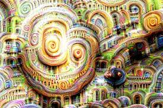
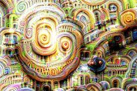

# Sonido creado por redes neuronales
Api de AIVA
Gilberto Esparza
Parásitos urbanos / Cultivos - 2015
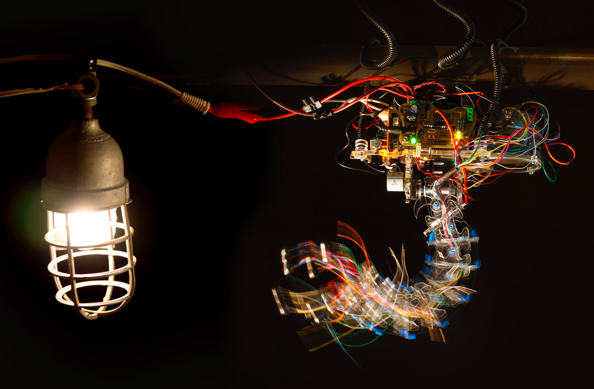
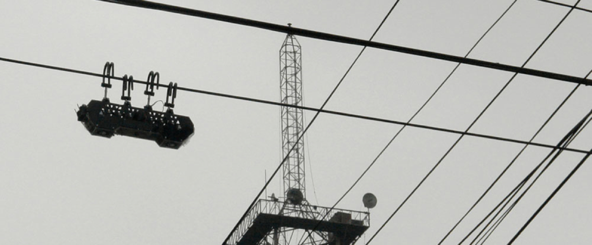
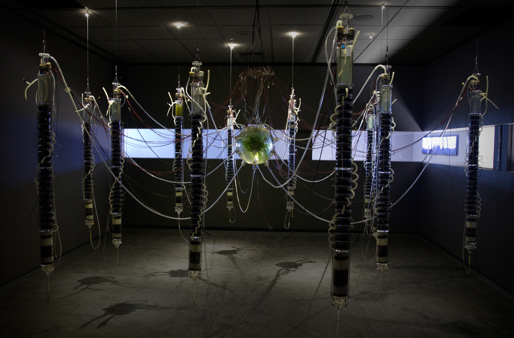
Leo Nuñez
Propagaciones
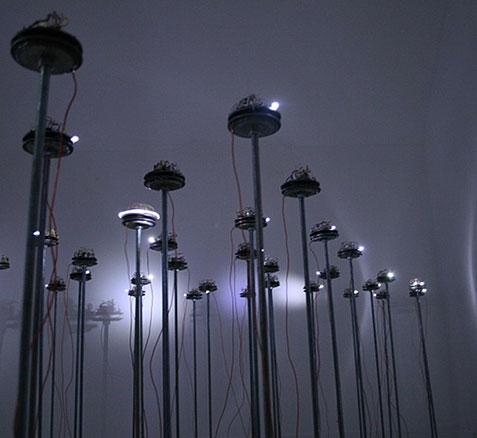
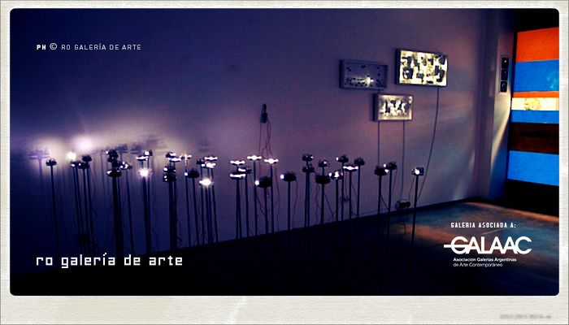
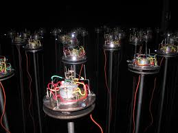
Luis Benedit
Biotron, 1970 / Laberinto para hormigas, 1974
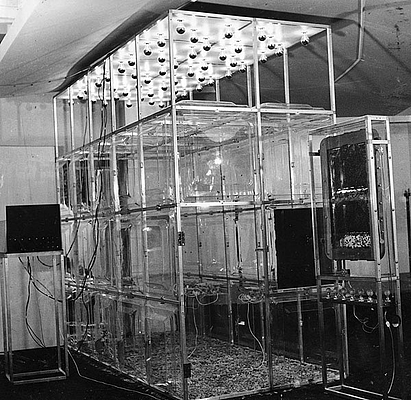
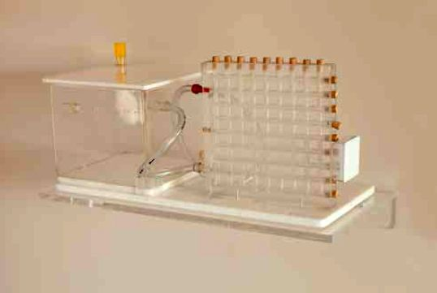
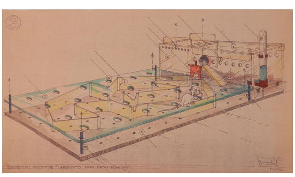